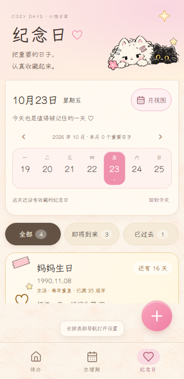
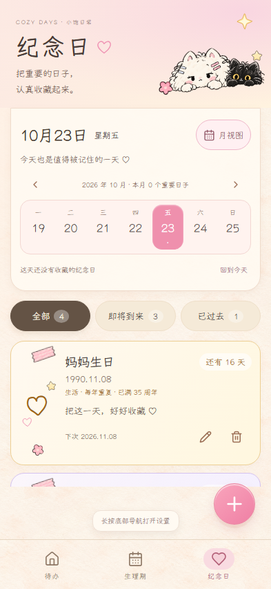
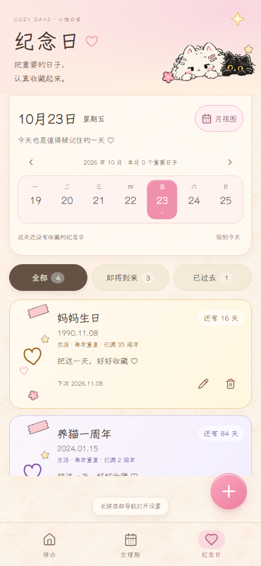
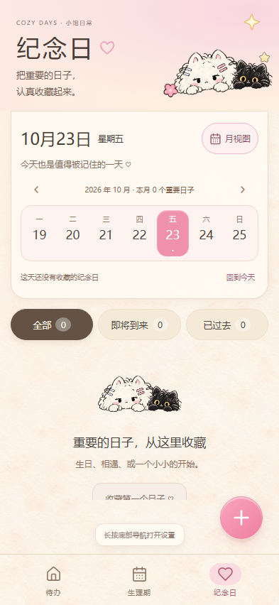
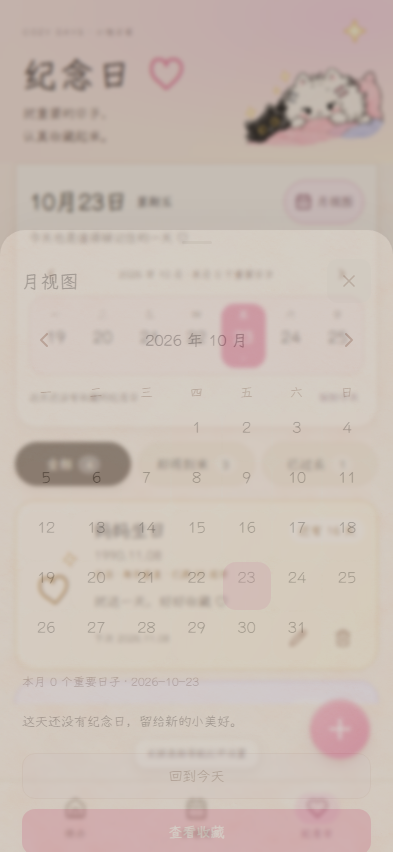
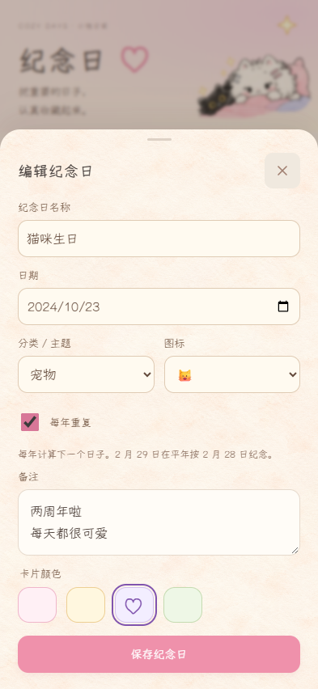
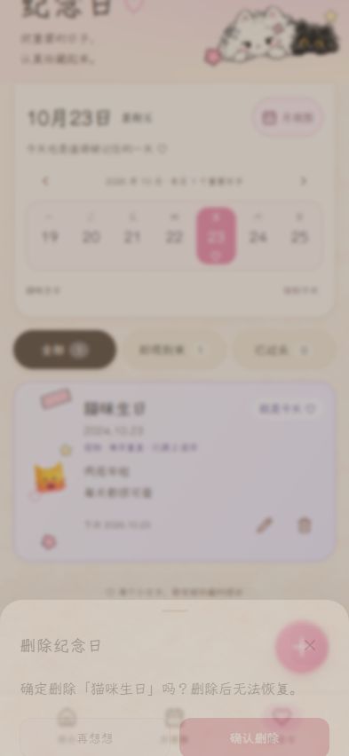

COZY DAYS · ANNIVERSARY REVIEW
纪念日，把日子认真收藏起来 ♡
打开当前 Preview，点击底部「纪念日」 · 返回总验收页
支持新增、全部字段编辑、删除确认、本地持久化、年度重复、本地日期倒计时、动态分类、周日期栏和月视图。首次打开没有演示数据；以下截图来自独立 Playwright 测试上下文的合成数据，截图时钟固定为 2026-10-23。
顶部双猫与空状态复用已有图片，卡片 emoji/字符为临时主题图标。没有新裁剪参考图，后续正式插画通过 artwork.ts 映射替换。
实际手机尺寸



空状态与月视图



删除二次确认

验证来源
以下为截图生成时的源码提交与验证记录；后续仅追加证据及文档。构建提交可在 build-info.json 中查看。查看截图与测试来源记录。
已覆盖旧版数据库升级保留待办、跨年与闰年、世纪闰年、UTC 跨日和夏令时、离线写入与缺失图片回退。Android 原生键盘与系统安全区仍需真机验收；未运行全量 E2E，运行了受影响的纪念日、待办和分类测试。尚未实现提醒推送。